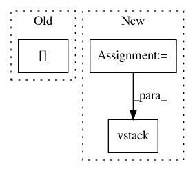

f3f9e020119736920b5bf3adc91fd658e1910775,examples/mnist_denoising_autoencoder.py,,,#,33
Before Change
x_decoded = autoencoder.predict(x_test_noisy)
// Display the 1st 8 corrupted and denoised images
imgs = np.concatenate([x_test_noisy[:8], x_decoded[:8]])
imgs = imgs.reshape((4, 4, image_size, image_size))
imgs = np.vstack([np.hstack(i) for i in imgs])
plt.figure()
After Change
num = rows * cols
imgs = np.concatenate([x_test[:num], x_test_noisy[:num], x_decoded[:num]])
imgs = imgs.reshape((rows * 3, cols, image_size, image_size))
imgs = np.vstack(np.split(imgs, rows, axis=1))
imgs = imgs.reshape((rows * 3, -1, image_size, image_size))
imgs = np.vstack([np.hstack(i) for i in imgs])
imgs = (imgs * 255).astype(np.uint8)
plt.figure()
In pattern: SUPERPATTERN
Frequency: 3
Non-data size: 3
Instances
Project Name: keras-team/keras
Commit Name: f3f9e020119736920b5bf3adc91fd658e1910775
Time: 2018-01-12
Author: ozabluda@gmail.com
File Name: examples/mnist_denoising_autoencoder.py
Class Name:
Method Name:
Project Name: GPflow/GPflow
Commit Name: 5809cb0b339612434f4f332a91a2cd3e4570c34d
Time: 2018-02-26
Author: james@prowler.io
File Name: gpflow/transforms.py
Class Name: LowerTriangular
Method Name: backward
Project Name: GPflow/GPflow
Commit Name: 4dc651fc54fa2cbc4d6fef2b3d853e738b9685b6
Time: 2018-01-05
Author: mv310@cam.ac.uk
File Name: gpflow/transforms.py
Class Name: LowerTriangular
Method Name: backward